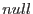

XMM-Newton Science Analysis System
colsmooth (colsmooth-1.7.1) [xmmsas_20170112_1337-16.0.0]
It may be desirable to avoid smoothing some parts of the input column  , for example if some values of are nulls. The mask can be supplied via two different methods, governed by the parameter masktype, namely:
, for example if some values of are nulls. The mask can be supplied via two different methods, governed by the parameter masktype, namely:
- masktype = `set': the task then expects the mask to be contained in the column of a fits table described by parameters masktable and maskcolumn. The data type of the column must be boolean, and it must have the same number of rows as incolumn. The dataset/table can be the same ones as contain incolumn.
- masktype = `expression': the task expects then a selection expression to be supplied via the parameter maskexpression. The expression should be limited to functions or tests of columns in the input table given by the parameter intable.
Note that the default setting of masktype is `none', with obvious effects.
The effect of the mask is to enable smoothing only where the mask is true. Specifically, equation 1 should be re-written as
Equation 3 needs to be similarly altered. The value  is a null value written by use of (and therefore recognized by) the appropriate dal
calls.
Subsections
XMM-Newton SOC/SSC -- 2017-01-12